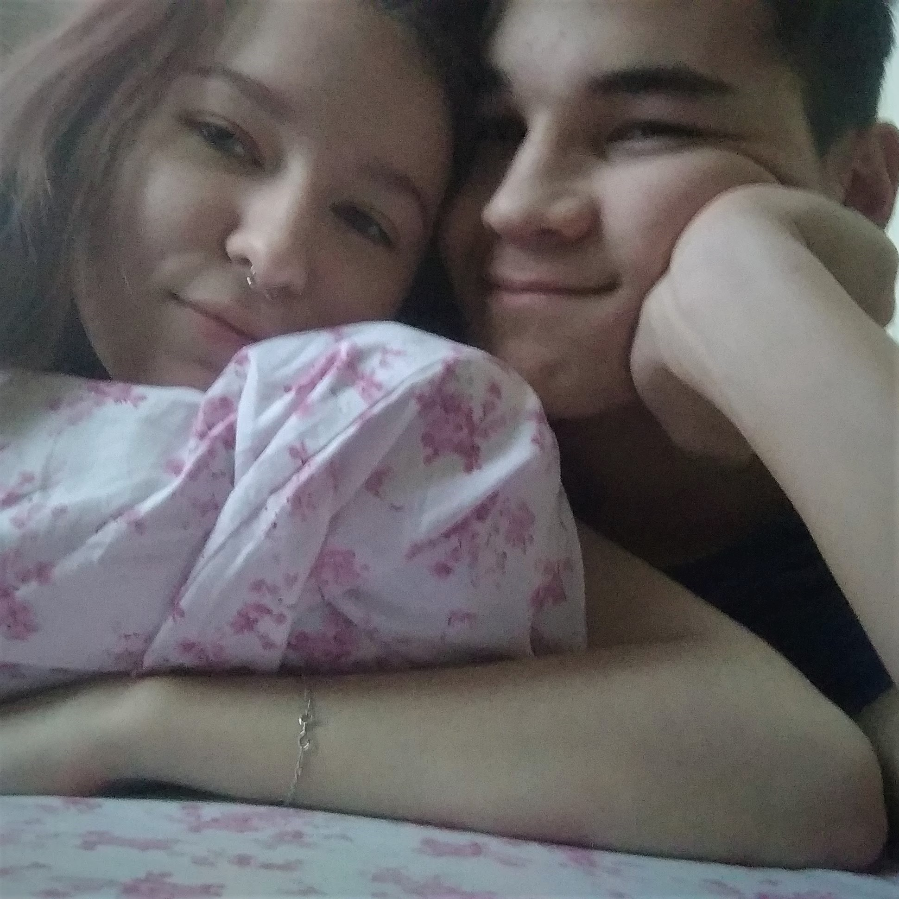
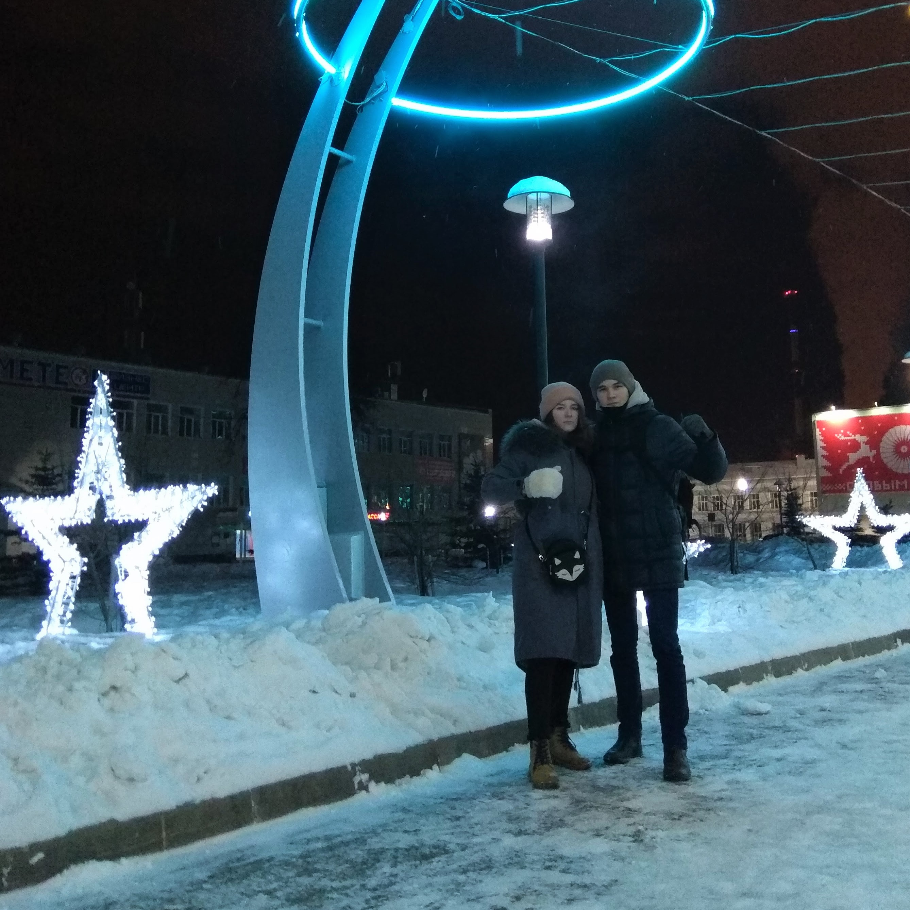
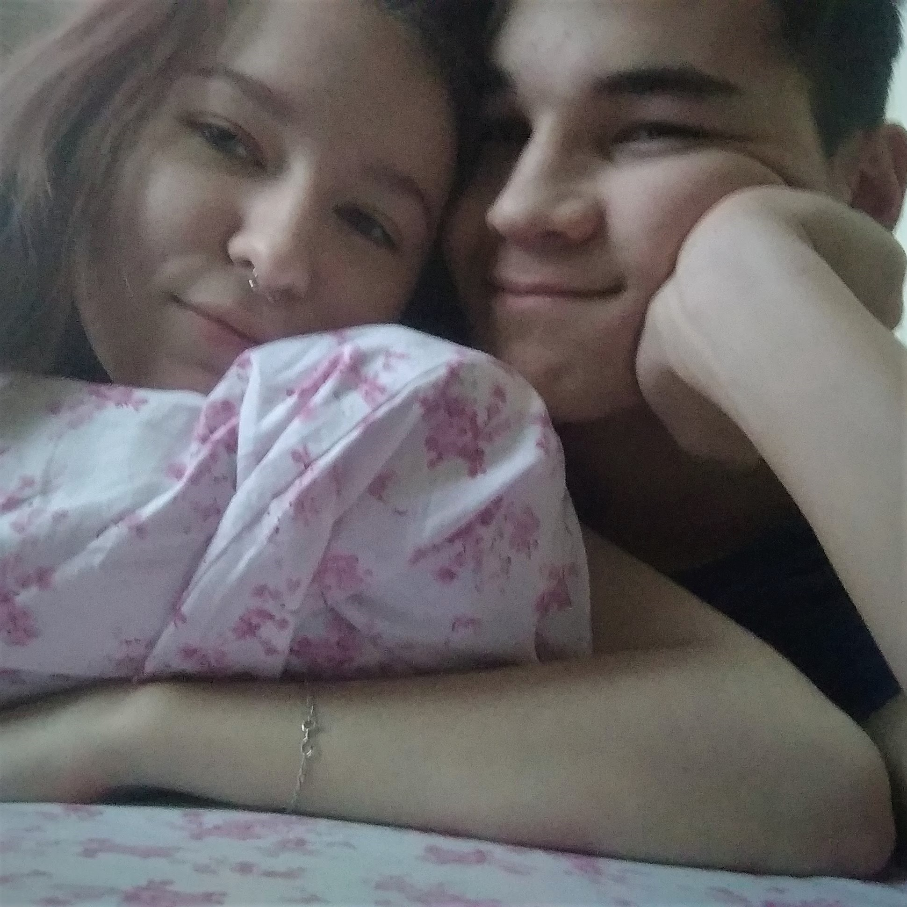
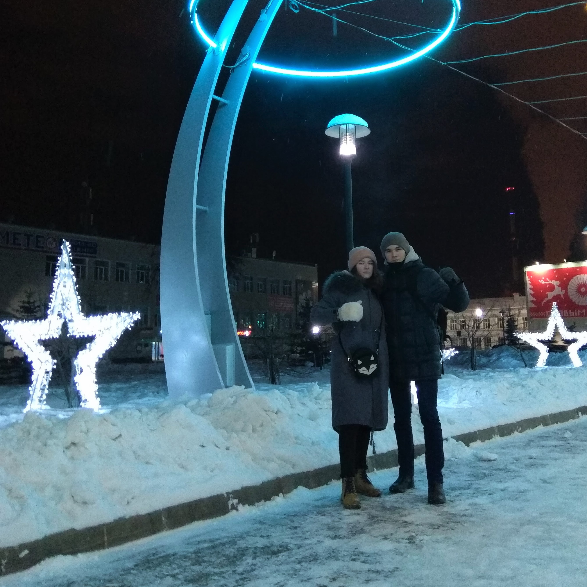

30 сентября. Даже не знаю, что сказать про этот день. Был дождь и солидный зонт. Покурили во дворе под подъездом. Прогулялись по эспланаде. Купили пиво. Пошли на пляж. Наверное, в душе я все еще ждала поцелуй, но головой я полностью отпустила эту ситуацию. «Пусть будет, как будет», сказала я себе и просто проводила с тобой время. Когда ты начал расспрашивать про наш «поцелуй» с Антоном, я сразу поняла, к чему ты ведешь. Сердце начало биться чаще. Как сейчас помню «надо, да?» и твои губы тянуться к моим. В голове тысяча мыслей «А? Что? Как? Серьезно?», волнение сменяется спокойствием, спокойствие волнением. Меня переполняли эмоции. Радость. До намекалась. Мы вместе. Обнялись. Умиротворение. А потом как-то стремно стало. Я не говорила с тобой об этом не разу, но раз уж пишу… ахахахаха. Чувствую себе героиней нашего любимого паблика… Ты просто после поцелуя спросил что-то вроде «А ты уже целовалась?» и мне так не по себе стало, что-ли... У меня правда совсем мала опыта было… неужели так ужасно? Ахахахахха, блин, и смешно, и грустно. В тот то день уж тем более не хотелось прощаться, но, прости, в туалет мне хотелось сильнее, чем побыть с тобой (: Эти дни отложись в моей памяти навечно. Они были волшебными. И даже поцелуй через 3 дня был волшебным, как бы я не выебывалась. Все было замечательно, было так, как и должно было быть. Идеально.